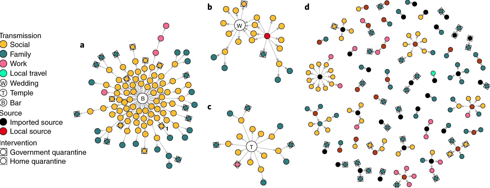
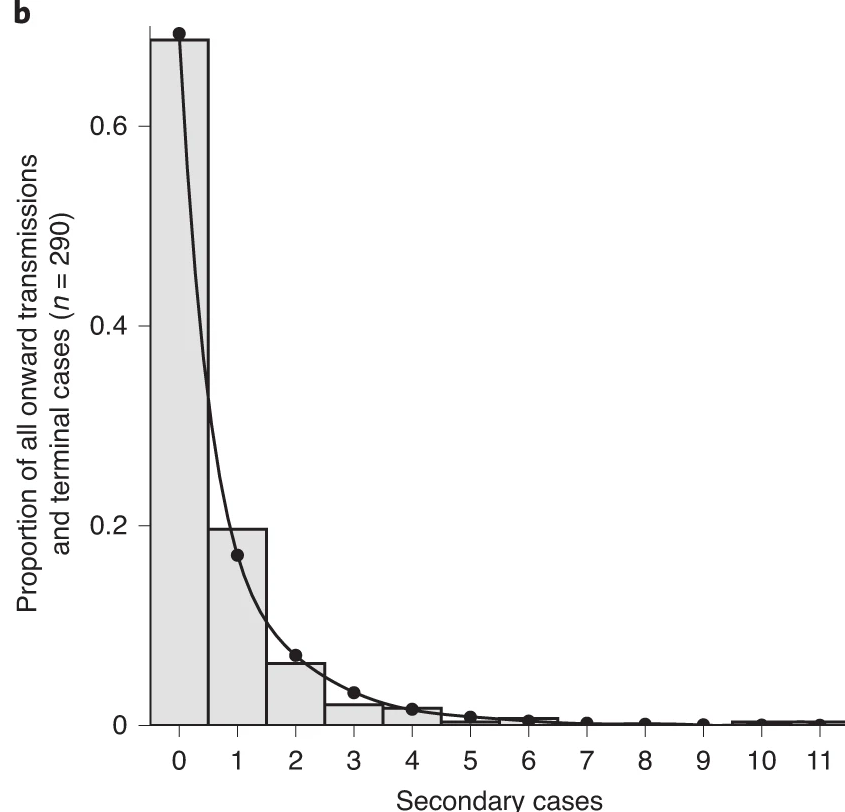
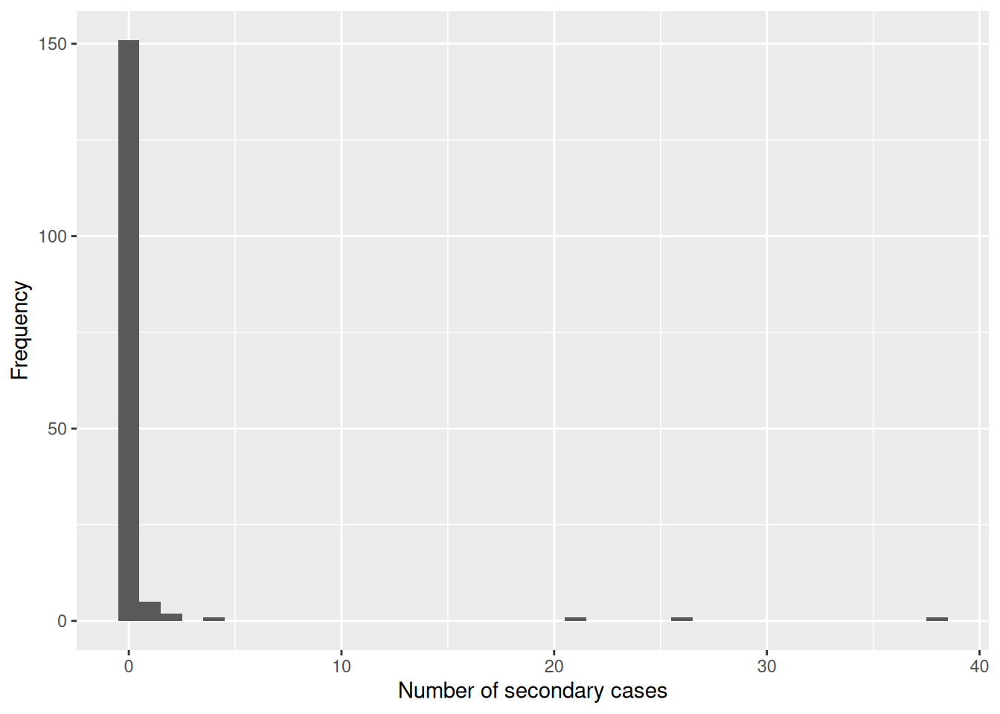
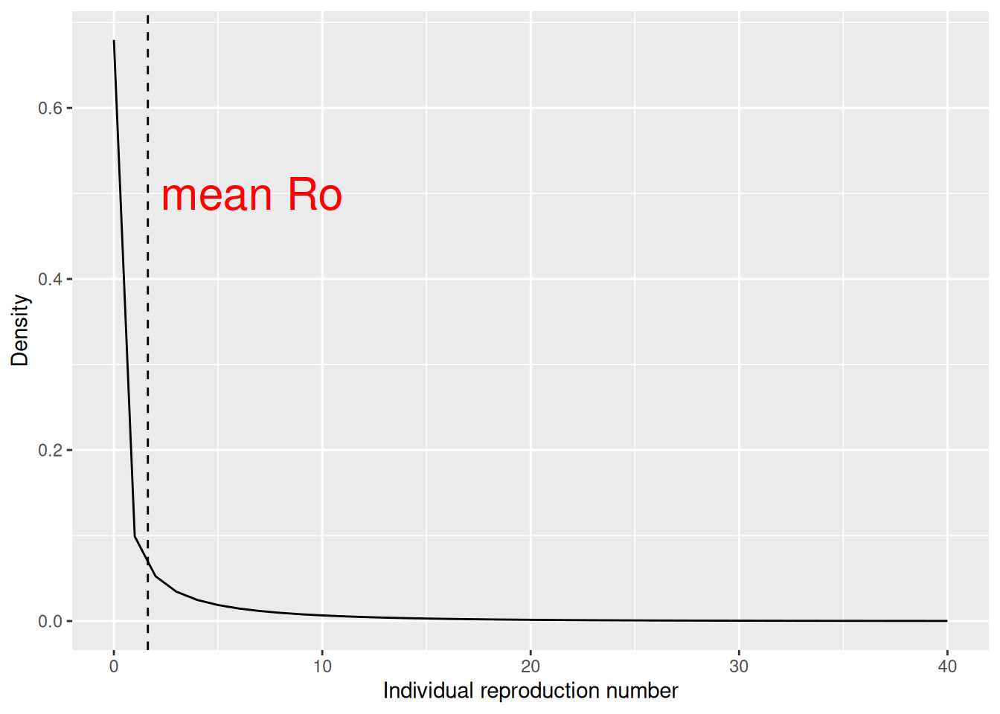
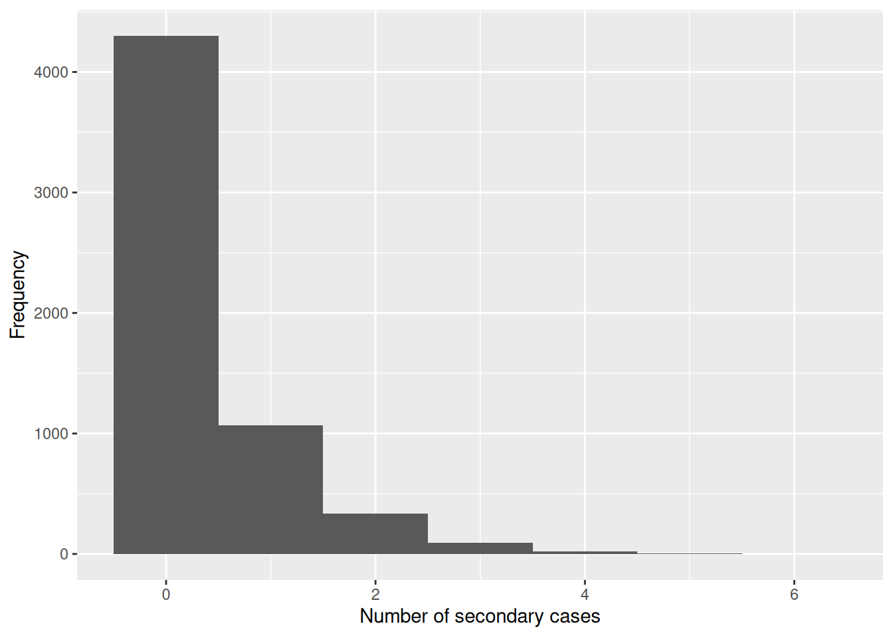
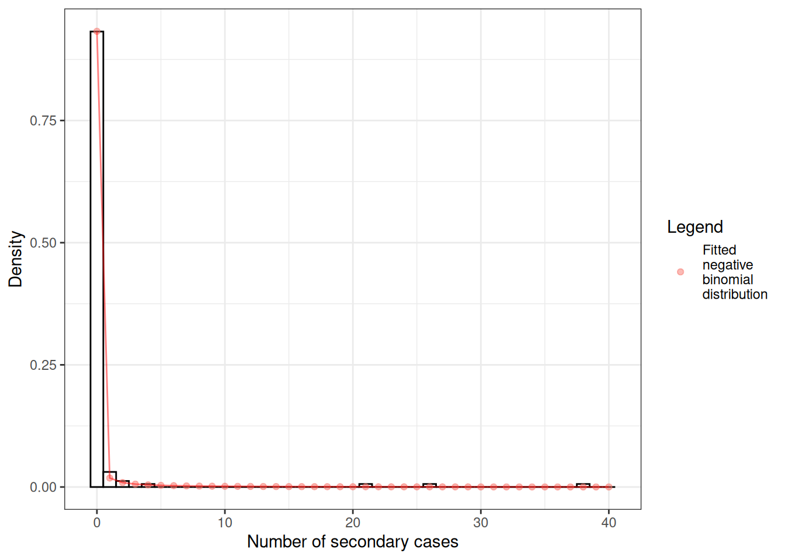
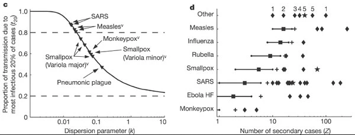
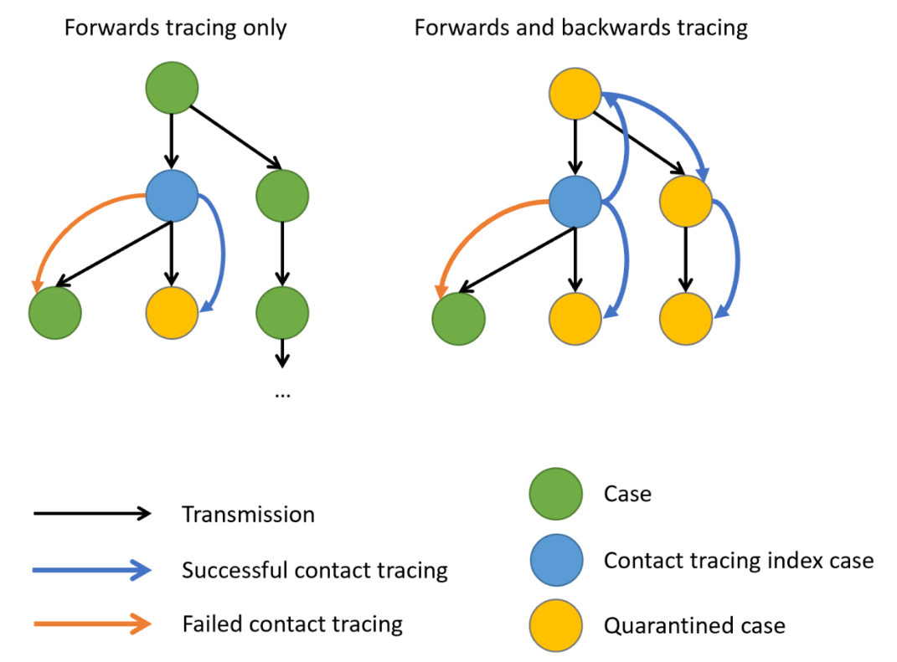
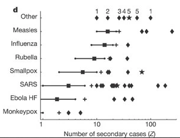

## primeiro, cria um objeto epicontacts
epi_contacts <-
epicontacts::make_epicontacts(
linelist = outbreaks::mers_korea_2015$linelist,
contacts = outbreaks::mers_korea_2015$contacts,
directed = TRUE
)Levar em conta o superspreading
NotaDois arquivos que este episódio cria na pasta do projeto
Ao renderizar este episódio, o {webshot} renderiza o grafo interativo em imagem e deixa dois arquivos na raiz do projeto: network.html (o grafo navegável) e webshot.png (a imagem usada no texto). Eles são efeito colateral do render, não material do curso — estão no .gitignore. A primeira execução também baixa o PhantomJS, o que exige conexão com a internet.
NotaPerguntas
- Como podemos estimar a variação na transmissão em nível individual (ou seja, o potencial de superspreading) a partir de dados de rastreamento de contatos?
- Quais são as implicações da variação na transmissão para a tomada de decisão?
DicaObjetivos
- Estimar a distribuição de transmissões subsequentes a partir de indivíduos infectados (ou seja, a distribuição de casos secundários) a partir de dados de surtos usando o
{epicontacts}. - Estimar a magnitude da variação em nível individual (ou seja, o parâmetro de dispersão) da distribuição de casos secundários usando o
{fitdistrplus}. - Estimar a proporção de transmissão que está ligada a “eventos de superdisseminação” usando o
{superspreading}.
ImportantePré-requisitos
Os participantes devem se familiarizar com os seguintes conceitos prévios antes de trabalhar neste tutorial:
Estatística: distribuições de probabilidade comuns, particularmente Poisson e binomial negativa.
Teoria epidêmica: O número de reprodução, R.
Pacotes de R instalados: {epicontacts}, {fitdistrplus}, {superspreading}, {outbreaks}, {tidyverse}.
NotaDetalhes
Instale os pacotes caso ainda não estejam instalados (no Brasil, você pode configurar o espelho do CRAN com options(repos = c(CRAN = "https://cran-r.c3sl.ufpr.br/"))).
if (!base::require("pak")) install.packages("pak")
pak::pak(c("epicontacts", "fitdistrplus", "superspreading", "outbreaks", "tidyverse"))Se você encontrar alguma mensagem de erro, acesse a página principal de configuração.
Introdução
Da varíola ao coronavírus 2 da síndrome respiratória aguda grave (SARS-CoV-2), alguns indivíduos infectados transmitem a infecção para mais pessoas do que outros. A transmissão de doenças é o resultado de uma combinação de fatores biológicos e sociais, e esses fatores se equilibram em médias, até certo ponto, no nível populacional durante uma grande epidemia. Por isso, pesquisadores frequentemente usam médias populacionais para avaliar o potencial de disseminação da doença. No entanto, nas fases iniciais ou finais de um surto, as diferenças individuais na infecciosidade podem ser mais importantes. Em particular, elas aumentam a chance de eventos de superdisseminação (SSEs), que podem desencadear epidemias explosivas e também influenciar as chances de controlar a transmissão (Lloyd-Smith et al., 2005).

O número de reprodução básico, \(R_{0}\), mede o número médio de casos causados por um indivíduo infeccioso em uma população totalmente suscetível. As estimativas de \(R_{0}\) são úteis para compreender a dinâmica média de uma epidemia no nível populacional, mas podem ocultar uma variação individual considerável na infecciosidade. Isso foi evidenciado durante a emergência global do SARS-CoV-2 por numerosos ‘eventos de superdisseminação’, nos quais determinados indivíduos infecciosos geraram um número extraordinariamente alto de casos secundários (Leclerc et al., 2020).

Neste tutorial, vamos quantificar a variação individual na transmissão e, assim, estimar o potencial para eventos de superdisseminação. Em seguida, usaremos essas estimativas para explorar as implicações do superspreading para intervenções de rastreamento de contatos.
Usaremos dados do pacote {outbreaks}, gerenciaremos os dados de linelist e contatos usando o {epicontacts} e estimaremos os parâmetros da distribuição com o {fitdistrplus}. Por fim, usaremos o {superspreading} para explorar as implicações da variação na transmissão para a tomada de decisão.
Usaremos o pipe %>% para conectar algumas das funções desses pacotes, portanto, vamos também carregar o pacote {tidyverse}.
library(outbreaks)
library(epicontacts)
library(fitdistrplus)
library(superspreading)
library(tidyverse)
NotaChecklist
Os dois-pontos duplos
Os dois-pontos duplos :: no R permitem chamar uma função específica de um pacote sem carregar o pacote inteiro no ambiente atual. O pacote precisa estar instalado.
Por exemplo, dplyr::filter(data, condition) usa filter() do pacote {dplyr}.
Isso nos ajuda a lembrar as funções dos pacotes e a evitar conflitos de espaço de nomes (namespaces).
O número de reprodução individual
O número de reprodução varia em nível individual; ou seja, o número de infecções secundárias varia de um indivíduo infectado para outro. A métrica estatística que captura essa variação em nível individual é chamada de número de reprodução individual. Trata-se de uma variável aleatória que representa o número de infecções secundárias causadas por um indivíduo infectado específico (Lloyd-Smith et al., 2005).
Para estimar a distribuição dessa variável aleatória na prática, no início de um surto podemos usar dados de contatos para reconstruir cadeias de transmissão (isto é, quem infectou quem) e calcular o número de casos secundários gerados por cada indivíduo. Essa reconstrução de eventos de transmissão vinculados a partir de dados de contatos pode fornecer uma compreensão sobre como diferentes indivíduos contribuíram para a transmissão durante uma epidemia (Cori et al., 2017).
Vamos praticar isso usando os dados de linelist e contatos de mers_korea_2015 do pacote {outbreaks} e integrá-los com o pacote {epicontacts} para calcular a distribuição de casos secundários durante o surto de MERS-CoV de 2015 na Coreia do Sul (Campbell, 2022):
Com o argumento directed = TRUE, configuramos um grafo direcionado. Essas direções incorporam nossa hipótese sobre o par infector-infectado: do paciente fonte provável para o caso secundário.
# visualiza a rede de contatos
plot(epi_contacts)
NotaDetalhes
Os dados de contato são tidy?
Os dados de contatos de uma cadeia de transmissão podem fornecer informações sobre quais indivíduos infectados entraram em contato com outros. Esperamos ter o infector (from) e o infectado (to), além de colunas adicionais de variáveis relacionadas ao contato, como local (exposure) e data do contato.
Seguindo os princípios de tidy data (dados organizados), a unidade de observação no nosso data frame de contatos é o par infector-infectado. Embora um infector possa infectar múltiplos infectados, em investigações de rastreamento de contatos podemos registrar contatos vinculados a mais de um infector (por exemplo, dentro de um domicílio). Mas devemos esperar ter pares infector-infectado únicos, porque tipicamente cada pessoa infectada terá adquirido a infecção de apenas uma outra.
Para garantir esses pares únicos, podemos verificar a existência de repetições para os infectados:
# nenhum par infector-infectado está duplicado
epi_contacts %>%
purrr::pluck("contacts") %>%
dplyr::group_by(to) %>%
dplyr::filter(dplyr::n() > 1)# A tibble: 5 × 4
# Groups: to [2]
from to exposure diff_dt_onset
<chr> <chr> <fct> <int>
1 SK_16 SK_107 Emergency room 17
2 SK_87 SK_107 Emergency room 2
3 SK_14 SK_39 Hospital room 16
4 SK_11 SK_39 Hospital room 13
5 SK_12 SK_39 Hospital room 12Nosso objetivo é obter o número de casos secundários causados pelos indivíduos infectados observados. No data frame de contatos, quando cada par infector-infectado é único, o número de linhas por infector corresponde ao número de casos secundários gerados por aquele indivíduo.
# conta casos secundários por infector em contatos
epi_contacts %>%
purrr::pluck("contacts") %>%
dplyr::count(from, name = "secondary_cases") from secondary_cases
1 SK_1 26
2 SK_11 1
3 SK_118 1
4 SK_12 1
5 SK_123 1
6 SK_14 38
7 SK_15 4
8 SK_16 21
9 SK_6 2
10 SK_76 2
11 SK_87 1Mas essa saída contém apenas o número de casos secundários para os infectores notificados nos dados de contatos, e não para todos os indivíduos no objeto <epicontacts> como um todo.
Em vez disso, a partir do {epicontacts} podemos usar a função epicontacts::get_degree(). O argumento type = "out" obtém o grau de saída (out-degree) de cada nó na rede de contatos a partir do objeto da classe <epicontacts>. Em uma rede direcionada, o grau de saída é o número de arestas saintes (infectados) que emanam de um nó (infector) (Nykamp DQ, acesso: 2025).
Além disso, o argumento only_linelist = TRUE incluirá apenas os indivíduos no data frame de linelist. Durante investigações de surtos, esperamos um registro de todos os indivíduos infectados observados nos dados de linelist. No entanto, qualquer pessoa não vinculada a um potencial infector ou infectado não aparecerá nos dados de contatos. Assim, o argumento only_linelist = TRUE nos protegerá contra a omissão desse último grupo de indivíduos ao contar o número de casos secundários causados por todos os indivíduos infectados observados. Eles aparecerão na saída do vetor <integer> com 0 casos secundários.
# Conta casos secundários por indivíduo em contatos e linelist
all_secondary_cases <- epicontacts::get_degree(
x = epi_contacts,
type = "out",
only_linelist = TRUE
)
AvisoAtenção
Em epicontacts::get_degree() usamos o argumento only_linelist = TRUE. Isso serve para contar o número de casos secundários causados por todos os indivíduos infectados observados, o que inclui indivíduos nos data frames de contatos e linelist.
NotaDetalhes
Quando usar ‘only_linelist = FALSE’?
A premissa de que “o linelist incluirá todos os indivíduos nos contatos e no linelist” pode não funcionar para todas as situações.
Por exemplo, se durante o registro das infecções observadas, os dados de contatos incluírem mais indivíduos do que os disponíveis nos dados de linelist, então você precisa considerar apenas os indivíduos dos dados de contatos. Nessa situação, em epicontacts::get_degree() usamos o argumento only_linelist = FALSE.
Veja aqui um exemplo reproduzível impresso:
# Três indivíduos no linelist
sample_linelist <- tibble::tibble(
id = c("id1", "id2", "id3")
)
# Quatro pares infector-infectado com cinco indivíduos nos dados de contatos
sample_contact <- tibble::tibble(
from = c("id1","id1","id2","id4"),
to = c("id2","id3","id4","id5")
)
# cria um objeto epicontacts
sample_net <- epicontacts::make_epicontacts(
linelist = sample_linelist,
contacts = sample_contact,
directed = TRUE
)
# conta casos secundários por indivíduo apenas a partir do linelist
epicontacts::get_degree(x = sample_net, type = "out", only_linelist = TRUE)
#> id1 id2 id3
#> 2 1 0
# conta casos secundários por indivíduo apenas a partir dos contatos
epicontacts::get_degree(x = sample_net, type = "out", only_linelist = FALSE)
#> id1 id2 id4 id3 id5
#> 2 1 1 0 0A partir de um histograma do objeto all_secondary_cases, podemos identificar a variação em nível individual no número de casos secundários. Três casos estiveram relacionados a mais de 20 casos secundários, enquanto os demais casos tiveram menos de cinco ou zero casos secundários.
## plota a distribuição
all_secondary_cases %>%
tibble::enframe() %>%
ggplot(aes(value)) +
geom_histogram(binwidth = 1) +
labs(
x = "Number of secondary cases",
y = "Frequency"
)
O número de casos secundários pode ser usado para estimar empiricamente a distribuição de casos secundários, que é o número de infecções secundárias causadas por cada caso. Uma candidata a distribuição estatística usada para modelar a distribuição de casos secundários é a distribuição binomial negativa com dois parâmetros:
Média, que representa o \(R_{0}\), o número médio de casos (secundários) produzidos por um único indivíduo em uma população inteiramente suscetível, e
Dispersão, expressa como \(k\), que representa a variação na transmissão em nível individual por indivíduos únicos.

A partir do histograma e do gráfico de densidade, podemos identificar que a distribuição de casos secundários é fortemente assimétrica ou sobredispersa (overdispersed). Nesse referencial, os eventos de superdisseminação (SSEs) não são arbitrários ou excepcionais, mas simplesmente realizações da cauda direita da distribuição de casos secundários, que podemos quantificar e analisar (Lloyd-Smith et al., 2005).
NotaRecapitulação da terminologia
- A partir dos dados de linelist e de rastreamento de contatos, calculamos o número de casos secundários causados pelos indivíduos infectados observados.
- Enquanto o \(R_{0}\) captura a transmissão média na população, o número de reprodução individual é a variável aleatória que representa o número de infecções secundárias causadas por um indivíduo infectado específico nessa população.
- Devido a efeitos estocásticos na transmissão, o número de infecções secundárias causadas por cada infecção é descrito estatisticamente pela distribuição de casos secundários.
- A distribuição de casos secundários empírica pode ser modelada usando uma distribuição binomial negativa com média \(R_{0}\) e parâmetro de dispersão \(k\), estimados a partir do número observado de casos secundários.
NotaDetalhes
Poisson, sobredispersão e binomial negativa
Para a ocorrência de eventos discretos associados, podemos usar distribuições discretas de Poisson ou binomial negativa.
Em uma distribuição de Poisson, a média é igual à variância. Mas quando a variância é maior que a média, isso é chamado de sobredispersão (overdispersion). Em aplicações biológicas, a sobredispersão ocorre e, por isso, uma binomial negativa pode valer a pena ser considerada como uma alternativa à distribuição de Poisson.
A distribuição binomial negativa é especialmente útil para dados discretos em uma faixa positiva ilimitada cuja variância amostral excede a média amostral. Nesses termos, as observações são sobredispersas em relação a uma distribuição de Poisson, para a qual a média é igual à variância.
Na epidemiologia, a distribuição binomial negativa tem sido usada para modelar a transmissão de doenças infecciosas em que o número provável de infecções subsequentes pode variar consideravelmente de indivíduo para indivíduo e de ambiente para ambiente, capturando toda a variação nos históricos infecciosos dos indivíduos, incluindo propriedades biológicas (ou seja, grau de excreção viral) e circunstâncias ambientais (por exemplo, tipo e local de contato).
DicaDesafio
Calcule a distribuição de casos secundários para o ebola usando o objeto ebola_sim_clean do pacote {outbreaks}.
- A distribuição de casos secundários do ebola é assimétrica ou sobredispersa?
NotaDica
⚠️ Passo opcional: Este conjunto de dados tem 5829 casos. Executar plot(<epicontacts>) pode levar vários minutos e consumir memória significativa para grandes surtos como o linelist de ebola. Se você estiver em um computador mais antigo ou mais lento, pode pular este passo.
NotaSolução
## primeiro, cria um objeto epicontacts
ebola_contacts <-
epicontacts::make_epicontacts(
linelist = outbreaks::ebola_sim_clean$linelist,
contacts = outbreaks::ebola_sim_clean$contacts,
directed = TRUE
)
# conta casos secundários por indivíduo em contatos e linelist
ebola_secondary <- epicontacts::get_degree(
x = ebola_contacts,
type = "out",
only_linelist = TRUE
)
## plota a distribuição
ebola_secondary %>%
tibble::enframe() %>%
ggplot(aes(value)) +
geom_histogram(binwidth = 1) +
labs(
x = "Number of secondary cases",
y = "Frequency"
)
A partir de uma inspeção visual, a distribuição de casos secundários para o conjunto de dados de ebola em ebola_sim_clean mostra uma distribuição assimétrica com casos secundários iguais ou inferiores a 6. Precisamos complementar essa observação com uma análise estatística para avaliar a sobredispersão.
Estimar o parâmetro de dispersão
Para estimar empiricamente o parâmetro de dispersão \(k\), podemos ajustar uma distribuição binomial negativa ao número de casos secundários.
Podemos ajustar distribuições aos dados usando o pacote {fitdistrplus}, que fornece estimativas de máxima verossimilhança.
library(fitdistrplus)## ajusta a distribuição
offspring_fit <- all_secondary_cases %>%
fitdistrplus::fitdist(distr = "nbinom")
offspring_fitFitting of the distribution ' nbinom ' by maximum likelihood
Parameters:
estimate Std. Error
size 0.02039807 0.007278299
mu 0.60452947 0.337893199
NotaNome dos parâmetros
A partir da saída do {fitdistrplus}:
- O objeto
sizerefere-se ao parâmetro de dispersão estimado \(k\), e - O objeto
murefere-se à média estimada, que representa o \(R_{0}\),
A partir da distribuição do número de casos secundários, estimamos um parâmetro de dispersão \(k\) de 0.02, com um intervalo de confiança de 95% de 0.006 a 0.035. Como o valor de \(k\) é significativamente menor que um, podemos concluir que há um potencial considerável para eventos de superdisseminação.
Podemos sobrepor os valores de densidade estimados da distribuição binomial negativa ajustada e o histograma do número de casos secundários:

NotaVariação na transmissão em nível individual
A variação na transmissão em nível individual é definida pela relação entre a média (\(R_{0}\)) e a dispersão (\(k\)), que juntas definem a variância de uma distribuição binomial negativa.
O modelo binomial negativo tem \(variance = R_{0}(1+\frac{R_{0}}{k})\), portanto valores menores de \(k\) indicam maior variância e, consequentemente, maior variação em nível individual na transmissão.
\[\uparrow variance = R_{0}(1+\frac{R_{0}}{\downarrow k})\]
Quando \(k\) se aproxima do infinito (\(k \rightarrow \infty\)), a variância se iguala à média (porque \(\frac{R_{0}}{\infty}=0\)). Isso torna o modelo convencional de Poisson um caso especial do modelo binomial negativo.
DicaDesafio
A partir do desafio anterior, use a distribuição de casos secundários do objeto ebola_sim_clean do pacote {outbreaks}.
Ajuste uma distribuição binomial negativa para estimar a média e o parâmetro de dispersão da distribuição de casos secundários. Tente estimar a incerteza do parâmetro de dispersão a partir do erro padrão para intervalos de confiança de 95%.
- O parâmetro de dispersão estimado para o ebola fornece evidências de uma variação na transmissão em nível individual?
NotaDica
Revise como ajustamos uma distribuição binomial negativa usando a função fitdistrplus::fitdist().
NotaSolução
ebola_offspring <- ebola_secondary %>%
fitdistrplus::fitdist(distr = "nbinom")
ebola_offspringFitting of the distribution ' nbinom ' by maximum likelihood
Parameters:
estimate Std. Error
size 0.8539443 0.072505326
mu 0.3675993 0.009497097## extrai o parâmetro "size"
ebola_mid <- ebola_offspring$estimate[["size"]]
## calcula os intervalos de confiança de 95% usando a
## estimativa do erro padrão e
## os quantis 0.025 e 0.975 da distribuição normal.
ebola_lower <- ebola_mid + ebola_offspring$sd[["size"]] * qnorm(0.025)
ebola_upper <- ebola_mid + ebola_offspring$sd[["size"]] * qnorm(0.975)
# ebola_mid
# ebola_lower
# ebola_upperA partir da distribuição do número de casos secundários, estimamos um parâmetro de dispersão \(k\) de 0.85, com um intervalo de confiança de 95% de 0.71 a 1.
Para estimativas do parâmetro de dispersão maiores que um, obtemos baixa variância na distribuição e, portanto, baixa variação na transmissão em nível individual.
Mas isso significa que a distribuição de casos secundários não tem eventos de superdisseminação (SSEs)? Mais adiante você encontrará um desafio adicional: Como definir um limiar de SSE para o ebola?
NotaSolução
Selecionar o melhor modelo
Podemos usar as estimativas de máxima verossimilhança do {fitdistrplus} para comparar diferentes modelos e avaliar o desempenho do ajuste usando estimadores como o AIC e o BIC. Leia mais na vinheta sobre Estimar a transmissão em nível individual e use a função auxiliar ic_tbl() do {superspreading} para isso!
NotaChecklist
O parâmetro de dispersão entre diferentes doenças
Pesquisas sobre infecções sexualmente transmissíveis e doenças transmitidas por vetores sugeriram anteriormente uma regra ‘20/80’, com 20% dos indivíduos contribuindo com pelo menos 80% do potencial de transmissão (Woolhouse et al., 1997).
Por si só, o parâmetro de dispersão \(k\) é difícil de interpretar intuitivamente e, portanto, convertê-lo em um resumo proporcional pode facilitar a comparação. Quando consideramos uma gama mais ampla de patógenos, podemos ver que não há uma regra rígida para a porcentagem que gera 80% da transmissão, mas a variação surge como uma característica comum das doenças infecciosas:
Quando os 20% de casos mais infecciosos contribuem com 80% da transmissão (ou mais), há uma alta variação na transmissão em nível individual, com uma distribuição de casos secundários fortemente sobredispersa (\(k<0.1\)), por exemplo, SARS-1.
Quando os 20% de casos mais infecciosos contribuem com ~50% da transmissão, há uma baixa variação na transmissão em nível individual, com uma distribuição de casos secundários moderadamente dispersa (\(k > 0.1\)), por exemplo, peste pneumônica.

Controlar o superspreading com o rastreamento de contatos
Durante um surto, é comum tentar reduzir a transmissão identificando pessoas que entraram em contato com uma pessoa infectada e, em seguida, colocá-las em quarentena caso venham a se infectar. Esse rastreamento de contatos pode ser implementado de várias maneiras. O rastreamento de contatos ‘prospectivo’ (forward) tem como alvo os contatos a jusante que possam ter sido infectados por uma infecção recém-identificada (ou seja, o ‘caso índice’). Já o rastreamento ‘retrospectivo’ (backward) rastreia a montante o caso primário que infectou o caso índice (ou um local ou evento no qual o caso índice foi infectado), por exemplo, refazendo o histórico de contatos até o provável ponto de exposição. Isso torna possível identificar outros que também foram potencialmente infectados por esse caso primário anterior.
Na presença de variação na transmissão em nível individual, isto é, com uma distribuição de casos secundários sobredispersa, se esse caso primário for identificado, uma fração maior da cadeia de transmissão poderá ser detectada ao realizar o rastreamento prospectivo de cada um dos contatos desse caso primário (Endo et al., 2020).

Quando há evidências de variação em nível individual (ou seja, sobredispersão), muitas vezes resultando nos chamados eventos de superdisseminação, uma grande proporção das infecções pode estar vinculada a uma pequena proporção dos aglomerados originais. Como resultado, encontrar e direcionar intervenções aos aglomerados originários, em combinação com a redução de infecções subsequentes, pode aumentar substancialmente a eficácia dos métodos de rastreamento (Endo et al., 2020).
Evidências empíricas com foco na avaliação da eficiência do rastreamento retrospectivo levaram à identificação de 42% mais casos do que o rastreamento prospectivo, apoiando sua implementação quando uma supressão rigorosa da transmissão é justificada (Raymenants et al., 2022).
Probabilidade de casos em um determinado aglomerado
Usando o {superspreading}, podemos estimar a probabilidade de ter um aglomerado de infecções secundárias causadas por um caso primário identificado por rastreamento retrospectivo de tamanho \(X\) ou maior (Endo et al., 2020).
# Define a semente para o gerador de números aleatórios
set.seed(33)
# estima a probabilidade de
# ter um aglomerado de tamanho 5, 10 ou 25
# casos secundários a partir de um caso primário,
# dados o número de reprodução e o
# parâmetro de dispersão conhecidos.
superspreading::proportion_cluster_size(
R = offspring_fit$estimate["mu"],
k = offspring_fit$estimate["size"],
cluster_size = c(5, 10, 25)
) R k prop_5 prop_10 prop_25
1 0.6045295 0.02039807 87.9% 74.6% 46.1%Mesmo tendo um \(R<1\), uma distribuição de casos secundários fortemente sobredispersa (\(k=0.02\)) significa que, se detectarmos um novo caso, há uma probabilidade de 46.1% de que ele tenha se originado de um aglomerado de 25 infecções ou mais. Portanto, ao seguir uma estratégia retrospectiva, os esforços de rastreamento de contatos aumentarão a probabilidade de conter e colocar em quarentena com sucesso esse grande número de indivíduos infectados anteriormente, em vez de simplesmente focar no novo caso, que provavelmente não infectou ninguém (porque \(k\) é muito pequeno).
Também podemos usar esse número para restringir aglomerações a partir de um determinado tamanho para reduzir a epidemia, prevenindo potenciais eventos de superdisseminação. As intervenções podem ter como meta reduzir o número de reprodução a fim de diminuir a probabilidade de ter aglomerados de casos secundários.
DicaDesafio
Rastreamento retrospectivo de contatos para o ebola
Use os parâmetros estimados para o ebola do objeto ebola_sim_clean do pacote {outbreaks}.
Calcule a probabilidade de ter um aglomerado de infecções secundárias causadas por um caso primário identificado por rastreamento retrospectivo de tamanho 5, 10, 15 ou maior. A implementação de uma estratégia retrospectiva neste estágio do surto de ebola aumentaria a probabilidade de conter e colocar em quarentena mais casos subsequentes?
NotaDica
Revise como estimamos a probabilidade de ter aglomerados de tamanho fixo, dados a média e os parâmetros de dispersão da distribuição de casos secundários, usando a função superspreading::proportion_cluster_size().
ImportantePara o instrutor
# estima a probabilidade de
# ter um aglomerado de tamanho 5, 10 ou 25
# casos secundários a partir de um caso primário,
# dados o número de reprodução e o
# parâmetro de dispersão conhecidos.
superspreading::proportion_cluster_size(
R = ebola_offspring$estimate["mu"],
k = ebola_offspring$estimate["size"],
cluster_size = c(5, 10, 25)
) R k prop_5 prop_10 prop_25
1 0.3675993 0.8539443 2.64% 0% 0%A probabilidade de ter aglomerados de cinco pessoas é de 1,8%. Neste estágio, dados os parâmetros dessa distribuição de casos secundários, uma estratégia retrospectiva pode não aumentar a probabilidade de conter e colocar em quarentena mais casos subsequentes.
Desafios
DicaDesafio
O ebola tem algum evento de superdisseminação?
‘Eventos de superdisseminação’ podem significar coisas diferentes para pessoas diferentes, por isso Lloyd-Smith et al., 2005 propuseram um protocolo geral para definir um evento de superdisseminação (SSE). Se o número de infecções secundárias causadas por cada caso, \(Z\), segue uma distribuição binomial negativa (\(R, k\)):
- Definimos um SSE como qualquer indivíduo infectado que infecta mais do que \(Z(n)\) outras pessoas, onde \(Z(n)\) é o n-ésimo percentil da distribuição \(Poisson(R)\).
- Um SSE do percentil 99 é, portanto, qualquer caso que causa mais infecções do que ocorreria em 99% dos históricos infecciosos em uma população homogênea.
Usando a função de distribuição correspondente, estime o limiar de SSE para definir um SSE para as estimativas da distribuição de casos secundários do ebola para o objeto ebola_sim_clean do pacote {outbreaks}.
NotaDica
Em uma distribuição de Poisson, o parâmetro lambda ou taxa (rate) é igual à média estimada de uma distribuição binomial negativa. Você pode explorar isso no aplicativo Shiny The distribution zoo.
NotaSolução
Para obter o valor do quantil para o percentil 99, precisamos usar a função de densidade para a distribuição de Poisson dpois().
# obtém a média
ebola_mu_mid <- ebola_offspring$estimate["mu"]
# obtém o percentil 99 da distribuição de poisson
# com média igual a mu
stats::qpois(
p = 0.99,
lambda = ebola_mu_mid
)[1] 2Compare esses valores com os relatados por Lloyd-Smith et al., 2005. Veja a figura abaixo:

DicaDesafio
Proporção esperada de transmissão
Qual é a proporção de casos responsável por 80% da transmissão?
Use o {superspreading} e compare as estimativas para MERS, usando os parâmetros da distribuição de casos secundários deste episódio do tutorial, com os parâmetros da distribuição de casos secundários de SARS-1 e ebola acessíveis por meio do pacote R {epiparameter}.
NotaDica
Para usar superspreading::proportion_transmission(), recomendamos ler o manual de referência Estimar qual proporção de casos causa uma certa proporção de transmissão (Estimate what proportion of cases cause a certain proportion of transmission).
Atualmente, o {epiparameter} possui distribuições de casos secundários para SARS, Smallpox, Mpox, Pneumonic Plague, Hantavirus Pulmonary Syndrome, Ebola Virus Disease. Vamos acessar os parâmetros de mean (média) e dispersion (dispersão) da distribuição de casos secundários para SARS-1:
# Carrega os parâmetros
sars <- epiparameter::epiparameter_db(
disease = "SARS",
epi_name = "offspring distribution",
single_epiparameter = TRUE
)
sars_params <- epiparameter::get_parameters(sars)
sars_params mean dispersion
1.63 0.16
NotaSolução
#' estimativa para ebola --------------
ebola_epiparameter <- epiparameter::epiparameter_db(
disease = "Ebola",
epi_name = "offspring distribution",
single_epiparameter = TRUE
)
ebola_params <- epiparameter::get_parameters(ebola_epiparameter)
ebola_params mean dispersion
1.5 5.1 # estima a
# proporção de casos que
# geram 80% da transmissão
superspreading::proportion_transmission(
R = ebola_params[["mean"]],
k = ebola_params[["dispersion"]],
prop_transmission = 0.8
) R k prop_80
1 1.5 5.1 43.2%#' estimativa para sars --------------
# estima a
# proporção de casos que
# geram 80% da transmissão
superspreading::proportion_transmission(
R = sars_params[["mean"]],
k = sars_params[["dispersion"]],
prop_transmission = 0.8
) R k prop_80
1 1.63 0.16 13%#' estimativa para mers --------------
# estima a
# proporção de casos que
# geram 80% da transmissão
superspreading::proportion_transmission(
R = offspring_fit$estimate["mu"],
k = offspring_fit$estimate["size"],
prop_transmission = 0.8
) R k prop_80
1 0.6045295 0.02039807 2.13%A MERS tem o menor percentual de casos (2,1%) responsável por 80% da transmissão, representativo de distribuições de casos secundários fortemente sobredispersas.
O ebola tem o maior percentual de casos (43%) responsável por 80% da transmissão. Isso é representativo de distribuições de casos secundários com altos parâmetros de dispersão.
NotaDispersão inversa?
O parâmetro de dispersão \(k\) pode ser expresso de maneiras diferentes na literatura.
- Na página da Wikipédia sobre a binomial negativa, esse parâmetro é definido em sua forma recíproca (consulte a equação de variância).
- No aplicativo Shiny The distribution zoo, o parâmetro de dispersão \(k\) é denominado “Inverse-dispersion”, mas é igual ao parâmetro estimado neste episódio. Convidamos você a explorar isso!
NotaHeterogeneidade?
A variação na transmissão em nível individual também é chamada de heterogeneidade na transmissão ou grau de heterogeneidade em Lloyd-Smith et al., 2005, e infecciosidade heterogênea em Campbell et al., 2018 ao introduzir o pacote {outbreaker2}. Da mesma forma, uma rede de contatos pode armazenar contatos epidemiológicos heterogêneos, como na documentação do pacote {epicontacts} (Nagraj et al., 2018).
NotaPara se aprofundar
Leia estas postagens de blog
O artigo Tracing monkeypox, do consórcio JUNIPER, demonstra a utilidade dos modelos de rede no rastreamento de contatos.
A postagem Going viral, de Adam Kucharski, compartilha reflexões sobre viralização no YouTube, surtos de doenças e campanhas de marketing sobre as condições que desencadeiam o contágio online.
NotaPontos-chave
- Use o
{epicontacts}para calcular o número de casos secundários causados por um indivíduo específico a partir de dados de linelist e contatos. - Use o
{fitdistrplus}para estimar empiricamente a distribuição de casos secundários a partir da distribuição do número de casos secundários. - Use o
{superspreading}para estimar a probabilidade de ter aglomerados de um determinado tamanho a partir de casos primários e orientar os esforços de rastreamento de contatos.